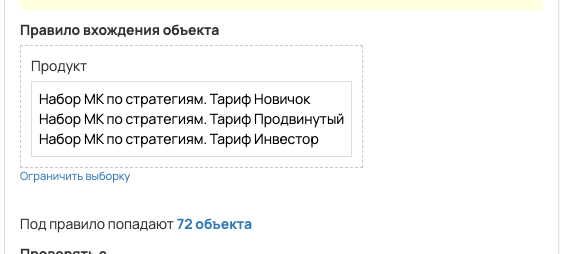
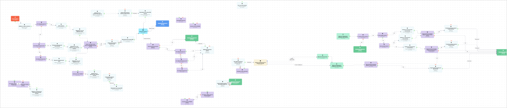

[AMO] [ED] Набор МК 98097
- ID процесса:
2416685 - Объект: Заказы
- Статус: Ожидание событий
Описание из GetCourse
30.06.2026. Подробный ход процесса GetCourse:
Главное: В процесс попадают заказы по следующим продуктам: «Тариф Новичок:», «Тариф Продвинутый: #offer» и «Тариф Инвестор:».
Процесс работает с объектом GetCourse: Заказы. Текущий статус процесса: Ожидание событий.
Как идет процесс внутри GetCourse:
- Схема состоит из 77 блоков и 107 переходов.
Конец подробного хода процесса GetCourse.
30.06.2026. Актуальное описание процесса:
Главное: В процесс попадают заказы по следующим продуктам: «Тариф Новичок:», «Тариф Продвинутый: #offer» и «Тариф Инвестор:».
Процесс работает с объектом GetCourse: Заказы. Текущий статус процесса: Ожидание событий.
Конец актуального описания процесса.
База https://vakas-tools.ru/account/base/amo.php?base_id=98097
Виджеты заказов
Тариф Новичок: https://investorpractic.getcourse.ru/pl/lite/widget/editor?id=1581378 Тариф Продвинутый: https://investorpractic.getcourse.ru/pl/lite/widget/editor?id=1581380 Тариф Инвестор: https://investorpractic.getcourse.ru/pl/lite/widget/editor?id=1581383
Продукты
Тариф Новичок: https://investorpractic.getcourse.ru/pl/sales/product/update?id=4303322#offer Тариф Продвинутый: https://investorpractic.getcourse.ru/pl/sales/product/update?id=4303328#offer Тариф Инвестор: https://investorpractic.getcourse.ru/pl/sales/product/update?id=4303331#offer
Воронка: Лидорубы
Название: "мастер-классВИП6" Тег: "диагностика_мастер-класс" Новый заказ: Этап "Новая заявка" ч/о: Этап "2 группа" Оплачен: Этап "2 группа"
Если нет оплаты в течение 10 минут, то этап "Неоплаченные"
по задаче https://spi.bitrix24.ru/online/?IM_TASK=chat24416&IM_MESSAGE=2077578
Выдача по продуктам доступов: https://spi.bitrix24.ru/online/?IM_TASK=chat24416&IM_MESSAGE=2077776
Понятное описание процесса
- Процесс работает с объектом GetCourse: Заказы. Текущий статус процесса: Ожидание событий.
- На вход попадают данные так: В процесс попадают заказы по следующим продуктам: «Тариф Новичок:», «Тариф Продвинутый: #offer» и «Тариф Инвестор:».
- Техническое правило входа в GetCourse: Продукт (ID: 4303322, 4303328, 4303331).
- Внутри схемы есть дополнительные проверки/ожидания: 23. Основные блоки: «это crypto_niagara "Полное участие" за 590?»; «Клиент уже имеет такой заказ за последние 30 дней? (копия)»; «Оплатил? (копия)»; «Автомарафон Крипта?»; «Был на вебе? (копия)»; «Был до конца? (копия)».
- Дальше процесс делает прямые вызовы Vakas: 4. Напрямую задействованы базы: 88097, 87177.
- Передача: 88097. База 88097: Оплаты и заказы. Передаются параметры:
number,id,order_id,positions,costMoney,leftCostMoney,payedMoney,status,paymentLink,firstNameи другие. - Передача: 87177. База 87177: Пользователи и визиты. Передаются параметры:
name,email,phone,getcourse_user_id,komment_from_autoveb_for_amo,finished,web_p1. - Передача: 87177. База 87177: Пользователи и визиты. Передаются параметры:
name,email,phone,getcourse_user_id,komment_from_autoveb_for_amo,finished,vizit_vebinar,view_date_data,webinarId,bil_minut. - Передача: 88097. База 88097: Оплаты и заказы. Передаются параметры:
number,id,order_id,positions,costMoney,leftCostMoney,payedMoney,status,paymentLink,firstNameи другие. - Что происходит в amoCRM: Маршрут в amoCRM нужно проверить вручную. На входе в этап ЛИДОРУБЫ -> Новая заявка [73992646] база ищет дубль и может взять старую сделку только из заранее разрешенных этапов.
Ход процесса в GetCourse
- Схема состоит из 77 блоков и 107 переходов.
- По типам: стартов 1, условий/ожиданий 23, вызовов URL 4, изменений полей 6, финалов 5.
Блоки процесса: что делают и зачем нужны:
- Блок
41933963«Начало работы» (старт). Что делает: Запускает выполнение схемы для объекта, который попал под правило входа процесса. Зачем нужен: Нужен как точка входа: от него GetCourse начинает движение объекта по схеме. Дальше: если результат «Выполнено», идет в «Добавить в группу (копия)». - Блок
41933986«Добавить в группу (копия)» (операция user_addtogroup). Что делает: Выполняет служебный шаг схемы «Добавить в группу (копия)». Зачем нужен: Нужен как промежуточный технический шаг в схеме «Добавить в группу (копия)». Дальше: если результат «Выполнено», идет в «Это Набор Мк новичок?». - Блок
41933997«Это Набор Мк новичок?» (условие). Что делает: Проверяет ветвление «Это Набор Мк новичок?», но текст условия в дампе не расшифрован. Зачем нужен: Нужен, чтобы разделить поток: подходящих пользователей/заказы отправить дальше, неподходящих перевести на другую ветку или завершить. Дальше: если результат «Нет», идет в «Это Набор МК продвинутый?»; если результат «Да», идет в «Доб название». - Блок
41934008«Доб название» (операция). Что делает: Выполняет служебный шаг схемы «Доб название». Зачем нужен: Нужен как промежуточный технический шаг в схеме «Доб название». Дальше: если результат «Выполнено», идет в «Добавляем тег для передачи в амо». - Блок
41934009«Добавляем тег для передачи в амо» (операция). Что делает: Выполняет служебный шаг схемы «Добавляем тег для передачи в амо». Зачем нужен: Нужен как промежуточный технический шаг в схеме «Добавляем тег для передачи в амо». Дальше: если результат «Выполнено», идет в «Клиент уже имеет такой заказ за последние 30 дней? (копия)». - Блок
41933966«Клиент уже имеет такой заказ за последние 30 дней? (копия)» (условие). Что делает: Проверяет ветвление «Клиент уже имеет такой заказ за последние 30 дней? (копия)», но текст условия в дампе не расшифрован. Зачем нужен: Нужен, чтобы разделить поток: подходящих пользователей/заказы отправить дальше, неподходящих перевести на другую ветку или завершить. Дальше: если результат «Нет», идет в «Новая заявка обновл сделку по кфи»; если результат «Да», идет в «Новая заявка обновл сделку по кфи». - Блок
41933998«Новая заявка обновл сделку по кфи» (операция). Что делает: Выполняет служебный шаг схемы «Новая заявка обновл сделку по кфи». Зачем нужен: Нужен как промежуточный технический шаг в схеме «Новая заявка обновл сделку по кфи». Дальше: если результат «Ошибка», идет в «n8n fail после Новая заявка обновл сделку по кфи #41933998»; если результат «Выполнено», идет в «n8n success после Новая заявка обновл сделку по кфи #41933998». - Блок
43526014«n8n success после Новая заявка обновл сделку по кфи #41933998» (операция). Что делает: Выполняет служебный шаг схемы «n8n success после Новая заявка обновл сделку по кфи #41933998». Зачем нужен: Нужен как промежуточный технический шаг в схеме «n8n success после Новая заявка обновл сделку по кфи #41933998». Дальше: если результат «Ошибка», идет в «База вакаса для новых КФИ»; если результат «Выполнено», идет в «База вакаса для новых КФИ». - Блок
41933999«База вакаса для новых КФИ» (операция). Что делает: Выполняет служебный шаг схемы «База вакаса для новых КФИ». Зачем нужен: Нужен как промежуточный технический шаг в схеме «База вакаса для новых КФИ». Дальше: если результат «Выполнено», идет в «Оплатил? (копия)». - Блок
41933968«Оплатил? (копия)» (ожидание условия). Что делает: Останавливает объект в ожидании нужного условия; точная формула в дампе не расшифрована. Зачем нужен: Нужен, чтобы не отправлять объект раньше времени: процесс ждет нужное событие, заказ, сегмент или другое условие. Дальше: если результат «Время истекло», идет в «Завершение процесса (копия)»; если результат «Условие выполнено», идет в «Еще не оплатил основной продукт?». - Блок
41933969«Завершение процесса (копия)» (завершение). Что делает: Завершает ветку процесса после выполненных проверок и действий. Зачем нужен: Нужен, чтобы закрыть текущую ветку и не гонять объект по процессу повторно. Дальше переходов нет: это конечная точка ветки. - Блок
41933987«Еще не оплатил основной продукт?» (условие). Что делает: Проверяет ветвление «Еще не оплатил основной продукт?», но текст условия в дампе не расшифрован. Зачем нужен: Нужен, чтобы разделить поток: подходящих пользователей/заказы отправить дальше, неподходящих перевести на другую ветку или завершить. Дальше: если результат «Нет», идет в «Завершение процесса (копия)»; если результат «Да», идет в «Это Набор МК Новичок?». - Блок
41934012«Это Набор МК Новичок?» (условие). Что делает: Проверяет ветвление «Это Набор МК Новичок?», но текст условия в дампе не расшифрован. Зачем нужен: Нужен, чтобы разделить поток: подходящих пользователей/заказы отправить дальше, неподходящих перевести на другую ветку или завершить. Дальше: если результат «Нет», идет в «Это Набор МК Продвинутый?»; если результат «Да», идет в «Наборк МК обновить сделку». - Блок
41934020«Наборк МК обновить сделку» (операция). Что делает: Выполняет служебный шаг схемы «Наборк МК обновить сделку». Зачем нужен: Нужен как промежуточный технический шаг в схеме «Наборк МК обновить сделку». Дальше: если результат «Ошибка», идет в «n8n fail после Наборк МК обновить сделку #41934020»; если результат «Выполнено», идет в «n8n success после Наборк МК обновить сделку #41934020». - Блок
43526047«n8n success после Наборк МК обновить сделку #41934020» (операция). Что делает: Выполняет служебный шаг схемы «n8n success после Наборк МК обновить сделку #41934020». Зачем нужен: Нужен как промежуточный технический шаг в схеме «n8n success после Наборк МК обновить сделку #41934020». Дальше: если результат «Ошибка», идет в «Завершение процесса (копия)»; если результат «Выполнено», идет в «Завершение процесса (копия)». - Блок
41933988«Завершение процесса (копия)» (завершение). Что делает: Завершает ветку процесса после выполненных проверок и действий. Зачем нужен: Нужен, чтобы закрыть текущую ветку и не гонять объект по процессу повторно. Дальше переходов нет: это конечная точка ветки. - Блок
43526048«n8n fail после Наборк МК обновить сделку #41934020» (операция). Что делает: Выполняет служебный шаг схемы «n8n fail после Наборк МК обновить сделку #41934020». Зачем нужен: Нужен как промежуточный технический шаг в схеме «n8n fail после Наборк МК обновить сделку #41934020». Дальше: если результат «Ошибка», идет в «Это Набор МК Новичок?»; если результат «Выполнено», идет в «Это Набор МК Новичок?». - Блок
41934184«Это Набор МК Продвинутый?» (условие). Что делает: Проверяет ветвление «Это Набор МК Продвинутый?», но текст условия в дампе не расшифрован. Зачем нужен: Нужен, чтобы разделить поток: подходящих пользователей/заказы отправить дальше, неподходящих перевести на другую ветку или завершить. Дальше: если результат «Нет», идет в «Это Набор МК Инвестор?»; если результат «Да», идет в «Наборк МК обновить сделку». - Блок
41934188«Это Набор МК Инвестор?» (условие). Что делает: Проверяет ветвление «Это Набор МК Инвестор?», но текст условия в дампе не расшифрован. Зачем нужен: Нужен, чтобы разделить поток: подходящих пользователей/заказы отправить дальше, неподходящих перевести на другую ветку или завершить. Дальше: если результат «Да», идет в «Наборк МК обновить сделку». - Блок
43526016«n8n fail после Новая заявка обновл сделку по кфи #41933998» (операция). Что делает: Выполняет служебный шаг схемы «n8n fail после Новая заявка обновл сделку по кфи #41933998». Зачем нужен: Нужен как промежуточный технический шаг в схеме «n8n fail после Новая заявка обновл сделку по кфи #41933998». Дальше: если результат «Ошибка», идет в «Клиент уже имеет такой заказ за последние 30 дней? (копия)»; если результат «Выполнено», идет в «Клиент уже имеет такой заказ за последние 30 дней? (копия)». - Блок
41934010«Это Набор МК продвинутый?» (условие). Что делает: Проверяет ветвление «Это Набор МК продвинутый?», но текст условия в дампе не расшифрован. Зачем нужен: Нужен, чтобы разделить поток: подходящих пользователей/заказы отправить дальше, неподходящих перевести на другую ветку или завершить. Дальше: если результат «Нет», идет в «Это Набор МК Инвестор?»; если результат «Да», идет в «Изменить значение доп. поля (копия)». - Блок
41933967«Изменить значение доп. поля (копия)» (изменение поля). Что делает: меняет полеorder_name_amo(Установить равным). значение: мастер-классВИП6 Зачем нужен: Нужен, чтобы записать внутри GetCourse технический признак/значение, которое потом используется в передаче или логике ветвления. Дальше: если результат «Выполнено», идет в «Добавляем тег для передачи в амо (копия) (копия)». - Блок
41934004«Добавляем тег для передачи в амо (копия) (копия)» (операция). Что делает: Выполняет служебный шаг схемы «Добавляем тег для передачи в амо (копия) (копия)». Зачем нужен: Нужен как промежуточный технический шаг в схеме «Добавляем тег для передачи в амо (копия) (копия)». Дальше: если результат «Выполнено», идет в «Клиент уже имеет такой заказ за последние 30 дней? (копия)». - Блок
41934014«Это Набор МК Инвестор?» (условие). Что делает: Проверяет ветвление «Это Набор МК Инвестор?», но текст условия в дампе не расшифрован. Зачем нужен: Нужен, чтобы разделить поток: подходящих пользователей/заказы отправить дальше, неподходящих перевести на другую ветку или завершить. Дальше: если результат «Да», идет в «Изменить значение доп. поля». - Блок
41934015«Изменить значение доп. поля» (операция). Что делает: Выполняет служебный шаг схемы «Изменить значение доп. поля». Зачем нужен: Нужен как промежуточный технический шаг в схеме «Изменить значение доп. поля». Дальше: если результат «Выполнено», идет в «Добавляем тег для передачи в амо». - Блок
41934016«Добавляем тег для передачи в амо» (операция). Что делает: Выполняет служебный шаг схемы «Добавляем тег для передачи в амо». Зачем нужен: Нужен как промежуточный технический шаг в схеме «Добавляем тег для передачи в амо». Дальше: если результат «Выполнено», идет в «Клиент уже имеет такой заказ за последние 30 дней? (копия)». - Блок
41933964«это crypto_niagara "Полное участие" за 590?» (условие). Что делает: Проверяет ветвление «это crypto_niagara "Полное участие" за 590?», но текст условия в дампе не расшифрован. Зачем нужен: Нужен, чтобы разделить поток: подходящих пользователей/заказы отправить дальше, неподходящих перевести на другую ветку или завершить. Дальше: если результат «Нет», идет в «Это полное участие? (копия) (копия)». - Блок
41934001«Это полное участие? (копия) (копия)» (условие). Что делает: Проверяет ветвление «Это полное участие? (копия) (копия)», но текст условия в дампе не расшифрован. Зачем нужен: Нужен, чтобы разделить поток: подходящих пользователей/заказы отправить дальше, неподходящих перевести на другую ветку или завершить. Дальше: если результат «Да», идет в «Изменить значение доп. поля (копия) (копия) (копия)». - Блок
41934002«Изменить значение доп. поля (копия) (копия) (копия)» (операция). Что делает: Выполняет служебный шаг схемы «Изменить значение доп. поля (копия) (копия) (копия)». Зачем нужен: Нужен как промежуточный технический шаг в схеме «Изменить значение доп. поля (копия) (копия) (копия)». Дальше переходов нет: это конечная точка ветки. - Блок
41933970«Автомарафон Крипта?» (условие). Что делает: Проверяет ветвление «Автомарафон Крипта?», но текст условия в дампе не расшифрован. Зачем нужен: Нужен, чтобы разделить поток: подходящих пользователей/заказы отправить дальше, неподходящих перевести на другую ветку или завершить. Дальше переходов нет: это конечная точка ветки. - Блок
41933972«Что-то не так (копия)» (операция notify_manager_operation). Что делает: Выполняет служебный шаг схемы «Что-то не так (копия)». Зачем нужен: Нужен как промежуточный технический шаг в схеме «Что-то не так (копия)». Дальше переходов нет: это конечная точка ветки. - Блок
41933975«Ждем до следующего вторника, 9:00 (копия)» (таймер). Что делает: Делает паузу или ждет заданное время перед следующим шагом. Зачем нужен: Нужен для задержки между проверкой и передачей, чтобы данные успели появиться или чтобы соблюсти нужный порядок обработки. Дальше: если результат «Выполнено», идет в «Условие (копия) (копия)». - Блок
41933995«Условие (копия) (копия)» (условие). Что делает: Проверяет ветвление «Условие (копия) (копия)», но текст условия в дампе не расшифрован. Зачем нужен: Нужен, чтобы разделить поток: подходящих пользователей/заказы отправить дальше, неподходящих перевести на другую ветку или завершить. Дальше: если результат «Нет», идет в «Завершение процесса (копия)»; если результат «Да», идет в «Был на вебе? (копия)». - Блок
41933976«Был на вебе? (копия)» (условие). Что делает: Проверяет ветвление «Был на вебе? (копия)», но текст условия в дампе не расшифрован. Зачем нужен: Нужен, чтобы разделить поток: подходящих пользователей/заказы отправить дальше, неподходящих перевести на другую ветку или завершить. Дальше: если результат «Нет», идет в «Изменить значение доп. поля (копия)»; если результат «Да», идет в «Был до конца? (копия)». - Блок
41933977«Был до конца? (копия)» (условие). Что делает: Проверяет ветвление «Был до конца? (копия)», но текст условия в дампе не расшифрован. Зачем нужен: Нужен, чтобы разделить поток: подходящих пользователей/заказы отправить дальше, неподходящих перевести на другую ветку или завершить. Дальше: если результат «Нет», идет в «Изменить значение доп. поля (копия)»; если результат «Да», идет в «Изменить значение доп. поля (копия)». - Блок
41933985«Изменить значение доп. поля (копия)» (изменение поля). Что делает: меняет полеkomment_from_autoveb_for_amo(Установить равным). значение: Был на вебе, досмотрел до конца Зачем нужен: Нужен, чтобы записать внутри GetCourse технический признак/значение, которое потом используется в передаче или логике ветвления. Дальше: если результат «Выполнено», идет в «Еще не оплатил основной продукт? (копия) (копия) (копия) (копия)». - Блок
41933991«Еще не оплатил основной продукт? (копия) (копия) (копия) (копия)» (условие). Что делает: Проверяет ветвление «Еще не оплатил основной продукт? (копия) (копия) (копия) (копия)», но текст условия в дампе не расшифрован. Зачем нужен: Нужен, чтобы разделить поток: подходящих пользователей/заказы отправить дальше, неподходящих перевести на другую ветку или завершить. Дальше: если результат «Нет», идет в «Завершение процесса (копия)»; если результат «Да», идет в «1 группа не обновл сделку по кфи (копия)». - Блок
41933980«1 группа не обновл сделку по кфи (копия)» (вызов URL). Что делает: Передает в Vakas: 87177. База 87177, канал «Пользователи и визиты» (GET); параметры:name,email,phone,getcourse_user_id,komment_from_autoveb_for_amo,finished,vizit_vebinar,view_date_data,webinarId,bil_minut; timeout 300 сек. Зачем нужен: Нужен, чтобы передать подходящий объект в 87177. База 87177; дальше Маршрут в amoCRM нужно проверить вручную. Дальше: если результат «Ошибка», идет в «n8n fail после 1 группа не обновл сделку по кфи (копия) #41933980»; если результат «Выполнено», идет в «n8n success после 1 группа не обновл сделку по кфи (копия) #41933980». - Блок
43525999«n8n success после 1 группа не обновл сделку по кфи (копия) #41933980» (операция). Что делает: Выполняет служебный шаг схемы «n8n success после 1 группа не обновл сделку по кфи (копия) #41933980». Зачем нужен: Нужен как промежуточный технический шаг в схеме «n8n success после 1 группа не обновл сделку по кфи (копия) #41933980». Дальше: если результат «Ошибка», идет в «Завершение процесса (копия)»; если результат «Выполнено», идет в «Завершение процесса (копия)». - Блок
41933982«Завершение процесса (копия)» (завершение). Что делает: Завершает ветку процесса после выполненных проверок и действий. Зачем нужен: Нужен, чтобы закрыть текущую ветку и не гонять объект по процессу повторно. Дальше переходов нет: это конечная точка ветки. - Блок
43526004«n8n fail после 1 группа не обновл сделку по кфи (копия) #41933980» (операция). Что делает: Выполняет служебный шаг схемы «n8n fail после 1 группа не обновл сделку по кфи (копия) #41933980». Зачем нужен: Нужен как промежуточный технический шаг в схеме «n8n fail после 1 группа не обновл сделку по кфи (копия) #41933980». Дальше: если результат «Ошибка», идет в «Еще не оплатил основной продукт? (копия) (копия) (копия) (копия)»; если результат «Выполнено», идет в «Еще не оплатил основной продукт? (копия) (копия) (копия) (копия)». - Блок
41933984«Изменить значение доп. поля (копия)» (изменение поля). Что делает: меняет полеkomment_from_autoveb_for_amo(Установить равным). значение: Был на вебе, не досмотрел до конца Зачем нужен: Нужен, чтобы записать внутри GetCourse технический признак/значение, которое потом используется в передаче или логике ветвления. Дальше: если результат «Выполнено», идет в «Еще не оплатил основной продукт? (копия) (копия) (копия)». - Блок
41933990«Еще не оплатил основной продукт? (копия) (копия) (копия)» (условие). Что делает: Проверяет ветвление «Еще не оплатил основной продукт? (копия) (копия) (копия)», но текст условия в дампе не расшифрован. Зачем нужен: Нужен, чтобы разделить поток: подходящих пользователей/заказы отправить дальше, неподходящих перевести на другую ветку или завершить. Дальше: если результат «Нет», идет в «Завершение процесса (копия)»; если результат «Да», идет в «2 группа не обновл сделку по кфи (копия)». - Блок
41933979«2 группа не обновл сделку по кфи (копия)» (вызов URL). Что делает: Передает в Vakas: 87177. База 87177, канал «Пользователи и визиты» (GET); параметры:name,email,phone,getcourse_user_id,komment_from_autoveb_for_amo,finished,web_p1; timeout 300 сек. Зачем нужен: Нужен, чтобы передать подходящий объект в 87177. База 87177; дальше Маршрут в amoCRM нужно проверить вручную. Дальше: если результат «Ошибка», идет в «n8n fail после 2 группа не обновл сделку по кфи (копия) #41933979»; если результат «Выполнено», идет в «n8n success после 2 группа не обновл сделку по кфи (копия) #41933979». - Блок
43525992«n8n success после 2 группа не обновл сделку по кфи (копия) #41933979» (операция). Что делает: Выполняет служебный шаг схемы «n8n success после 2 группа не обновл сделку по кфи (копия) #41933979». Зачем нужен: Нужен как промежуточный технический шаг в схеме «n8n success после 2 группа не обновл сделку по кфи (копия) #41933979». Дальше: если результат «Ошибка», идет в «Завершение процесса (копия)»; если результат «Выполнено», идет в «Завершение процесса (копия)». - Блок
43525994«n8n fail после 2 группа не обновл сделку по кфи (копия) #41933979» (операция). Что делает: Выполняет служебный шаг схемы «n8n fail после 2 группа не обновл сделку по кфи (копия) #41933979». Зачем нужен: Нужен как промежуточный технический шаг в схеме «n8n fail после 2 группа не обновл сделку по кфи (копия) #41933979». Дальше: если результат «Ошибка», идет в «Еще не оплатил основной продукт? (копия) (копия) (копия)»; если результат «Выполнено», идет в «Еще не оплатил основной продукт? (копия) (копия) (копия)». - Блок
41933983«Изменить значение доп. поля (копия)» (изменение поля). Что делает: меняет полеkomment_from_autoveb_for_amo(Установить равным). значение: Не был на вебе Зачем нужен: Нужен, чтобы записать внутри GetCourse технический признак/значение, которое потом используется в передаче или логике ветвления. Дальше: если результат «Выполнено», идет в «Еще не оплатил основной продукт? (копия) (копия) (копия)». - Блок
41933994«Завершение процесса (копия)» (завершение). Что делает: Завершает ветку процесса после выполненных проверок и действий. Зачем нужен: Нужен, чтобы закрыть текущую ветку и не гонять объект по процессу повторно. Дальше переходов нет: это конечная точка ветки. - Блок
41933996«это crypto_niagara "Полное участие" за 590?» (условие). Что делает: Проверяет ветвление «это crypto_niagara "Полное участие" за 590?», но текст условия в дампе не расшифрован. Зачем нужен: Нужен, чтобы разделить поток: подходящих пользователей/заказы отправить дальше, неподходящих перевести на другую ветку или завершить. Дальше: если результат «Нет», идет в «полное участие? 7566062 (копия)». - Блок
41934006«полное участие? 7566062 (копия)» (условие). Что делает: Проверяет ветвление «полное участие? 7566062 (копия)», но текст условия в дампе не расшифрован. Зачем нужен: Нужен, чтобы разделить поток: подходящих пользователей/заказы отправить дальше, неподходящих перевести на другую ветку или завершить. Дальше переходов нет: это конечная точка ветки. - Блок
41934003«полное участие? 7566062» (условие). Что делает: Проверяет ветвление «полное участие? 7566062», но текст условия в дампе не расшифрован. Зачем нужен: Нужен, чтобы разделить поток: подходящих пользователей/заказы отправить дальше, неподходящих перевести на другую ветку или завершить. Дальше: если результат «Нет», идет в «Добавляем тег диагностика_крипта (копия)». - Блок
41934000«Добавляем тег диагностика_крипта (копия)» (операция). Что делает: Выполняет служебный шаг схемы «Добавляем тег диагностика_крипта (копия)». Зачем нужен: Нужен как промежуточный технический шаг в схеме «Добавляем тег диагностика_крипта (копия)». Дальше переходов нет: это конечная точка ветки. - Блок
41934005«полное участие? 7566062» (условие). Что делает: Проверяет ветвление «полное участие? 7566062», но текст условия в дампе не расшифрован. Зачем нужен: Нужен, чтобы разделить поток: подходящих пользователей/заказы отправить дальше, неподходящих перевести на другую ветку или завершить. Дальше переходов нет: это конечная точка ветки. - Блок
41933971«Сейчас понедельник или вторник? (копия)» (таймер). Что делает: Делает паузу или ждет заданное время перед следующим шагом. Зачем нужен: Нужен для задержки между проверкой и передачей, чтобы данные успели появиться или чтобы соблюсти нужный порядок обработки. Дальше: если результат «Ни один из выбранных», идет в «Ждем до следующего вторника, 9:00 (копия)»; если результат «понедельник <br/>18:00 - 23:59», идет в «Ждем 48 часов (копия)»; если результат «вторник <br/>00:00 - 23:59», идет в «Ждем 48 часов (копия)». - Блок
41933973«Ждем 48 часов (копия)» (таймер). Что делает: Делает паузу или ждет заданное время перед следующим шагом. Зачем нужен: Нужен для задержки между проверкой и передачей, чтобы данные успели появиться или чтобы соблюсти нужный порядок обработки. Дальше: если результат «Выполнено», идет в «Ждем до следующего вторника, 9:00 (копия)». - Блок
41933974«Ждем до следующего вторника, 9:00 (копия)» (таймер). Что делает: Делает паузу или ждет заданное время перед следующим шагом. Зачем нужен: Нужен для задержки между проверкой и передачей, чтобы данные успели появиться или чтобы соблюсти нужный порядок обработки. Дальше: если результат «Выполнено», идет в «Еще не оплатил основной продукт? (копия) (копия)». - Блок
41933978«Новая заявка обновл сделку по кфи (копия)» (вызов URL). Что делает: Передает в Vakas: 88097. База 88097, канал «Оплаты и заказы» (GET); параметры:number,id,order_id,positions,costMoney,leftCostMoney,payedMoney,status,paymentLink,firstName,lastName,name,email,phoneи другие; timeout 300 сек. Зачем нужен: Нужен, чтобы передать подходящий объект в 88097. База 88097; дальше На входе в этап ЛИДОРУБЫ -> Новая заявка [73992646] база ищет дубль и может взять старую сделку только из заранее разрешенных этапов. Дальше: если результат «Ошибка», идет в «n8n fail после Новая заявка обновл сделку по кфи (копия) #41933978»; если результат «Выполнено», идет в «n8n success после Новая заявка обновл сделку по кфи (копия) #41933978». - Блок
41933981«2 группа обновл сделку по кфи (копия)» (вызов URL). Что делает: Передает в Vakas: 88097. База 88097, канал «Оплаты и заказы» (GET); параметры:number,id,order_id,positions,costMoney,leftCostMoney,payedMoney,status,paymentLink,firstName,lastName,name,email,phoneи другие; timeout 300 сек. Зачем нужен: Нужен, чтобы передать подходящий объект в 88097. База 88097; дальше На входе в этап ЛИДОРУБЫ -> Новая заявка [73992646] база ищет дубль и может взять старую сделку только из заранее разрешенных этапов. Дальше: если результат «Ошибка», идет в «n8n fail после 2 группа обновл сделку по кфи (копия) #41933981»; если результат «Выполнено», идет в «n8n success после 2 группа обновл сделку по кфи (копия) #41933981». - Блок
41933989«Еще не оплатил основной продукт? (копия) (копия)» (условие). Что делает: Проверяет ветвление «Еще не оплатил основной продукт? (копия) (копия)», но текст условия в дампе не расшифрован. Зачем нужен: Нужен, чтобы разделить поток: подходящих пользователей/заказы отправить дальше, неподходящих перевести на другую ветку или завершить. Дальше: если результат «Нет», идет в «Завершение процесса (копия)»; если результат «Да», идет в «2 группа обновл сделку по кфи (копия)». - Блок
41933992«База вакаса для новых КФИ (копия)» (изменение поля). Что делает: меняет полеlast_base_vakas(Установить равным). значение: 88097 Зачем нужен: Нужен, чтобы записать внутри GetCourse технический признак/значение, которое потом используется в передаче или логике ветвления. Дальше: если результат «Выполнено», идет в «Оплатил? (копия)». - Блок
41933993«Добавляем тег диагностика_крипта» (изменение поля). Что делает: меняет полеdeal_tag_1(Установить равным). значение: Автомарафон_КК Зачем нужен: Нужен, чтобы записать внутри GetCourse технический признак/значение, которое потом используется в передаче или логике ветвления. Дальше: если результат «Выполнено», идет в «Новая заявка обновл сделку по кфи (копия)». - Блок
41934007«Автовебинар обновл сделку по Крипто» (операция). Что делает: Выполняет служебный шаг схемы «Автовебинар обновл сделку по Крипто». Зачем нужен: Нужен как промежуточный технический шаг в схеме «Автовебинар обновл сделку по Крипто». Дальше: если результат «Ошибка», идет в «n8n fail после Автовебинар обновл сделку по Крипто #41934007»; если результат «Выполнено», идет в «n8n success после Автовебинар обновл сделку по Крипто #41934007». - Блок
41934011«2 группа обновл сделку по Автовебинар Крипта» (операция). Что делает: Выполняет служебный шаг схемы «2 группа обновл сделку по Автовебинар Крипта». Зачем нужен: Нужен как промежуточный технический шаг в схеме «2 группа обновл сделку по Автовебинар Крипта». Дальше: если результат «Ошибка», идет в «n8n fail после 2 группа обновл сделку по Автовебинар Крипта #41934011»; если результат «Выполнено», идет в «n8n success после 2 группа обновл сделку по Автовебинар Крипта #41934011». - Блок
41934013«Завершение процесса (копия) (копия)» (завершение). Что делает: Завершает ветку процесса после выполненных проверок и действий. Зачем нужен: Нужен, чтобы закрыть текущую ветку и не гонять объект по процессу повторно. Дальше переходов нет: это конечная точка ветки. - Блок
41934017«Новая заявка обновл сделку по кфи» (операция). Что делает: Выполняет служебный шаг схемы «Новая заявка обновл сделку по кфи». Зачем нужен: Нужен как промежуточный технический шаг в схеме «Новая заявка обновл сделку по кфи». Дальше: если результат «Ошибка», идет в «n8n fail после Новая заявка обновл сделку по кфи #41934017»; если результат «Выполнено», идет в «n8n success после Новая заявка обновл сделку по кфи #41934017». - Блок
41934018«База вакаса для новых КФИ» (операция). Что делает: Выполняет служебный шаг схемы «База вакаса для новых КФИ». Зачем нужен: Нужен как промежуточный технический шаг в схеме «База вакаса для новых КФИ». Дальше переходов нет: это конечная точка ветки. - Блок
41934019«Это КриптоСтарт (4261167)?» (условие). Что делает: Проверяет ветвление «Это КриптоСтарт (4261167)?», но текст условия в дампе не расшифрован. Зачем нужен: Нужен, чтобы разделить поток: подходящих пользователей/заказы отправить дальше, неподходящих перевести на другую ветку или завершить. Дальше: если результат «Нет», идет в «Автовебинар обновл сделку по Крипто». - Блок
43525986«n8n success после Новая заявка обновл сделку по кфи (копия) #41933978» (операция). Что делает: Выполняет служебный шаг схемы «n8n success после Новая заявка обновл сделку по кфи (копия) #41933978». Зачем нужен: Нужен как промежуточный технический шаг в схеме «n8n success после Новая заявка обновл сделку по кфи (копия) #41933978». Дальше: если результат «Ошибка», идет в «База вакаса для новых КФИ (копия)»; если результат «Выполнено», идет в «База вакаса для новых КФИ (копия)». - Блок
43525988«n8n fail после Новая заявка обновл сделку по кфи (копия) #41933978» (операция). Что делает: Выполняет служебный шаг схемы «n8n fail после Новая заявка обновл сделку по кфи (копия) #41933978». Зачем нужен: Нужен как промежуточный технический шаг в схеме «n8n fail после Новая заявка обновл сделку по кфи (копия) #41933978». Дальше: если результат «Ошибка», идет в «Добавляем тег диагностика_крипта»; если результат «Выполнено», идет в «Добавляем тег диагностика_крипта». - Блок
43526008«n8n success после 2 группа обновл сделку по кфи (копия) #41933981» (операция). Что делает: Выполняет служебный шаг схемы «n8n success после 2 группа обновл сделку по кфи (копия) #41933981». Зачем нужен: Нужен как промежуточный технический шаг в схеме «n8n success после 2 группа обновл сделку по кфи (копия) #41933981». Дальше: если результат «Ошибка», идет в «Завершение процесса (копия)»; если результат «Выполнено», идет в «Завершение процесса (копия)». - Блок
43526010«n8n fail после 2 группа обновл сделку по кфи (копия) #41933981» (операция). Что делает: Выполняет служебный шаг схемы «n8n fail после 2 группа обновл сделку по кфи (копия) #41933981». Зачем нужен: Нужен как промежуточный технический шаг в схеме «n8n fail после 2 группа обновл сделку по кфи (копия) #41933981». Дальше: если результат «Ошибка», идет в «Еще не оплатил основной продукт? (копия) (копия)»; если результат «Выполнено», идет в «Еще не оплатил основной продукт? (копия) (копия)». - Блок
43526022«n8n success после Автовебинар обновл сделку по Крипто #41934007» (операция). Что делает: Выполняет служебный шаг схемы «n8n success после Автовебинар обновл сделку по Крипто #41934007». Зачем нужен: Нужен как промежуточный технический шаг в схеме «n8n success после Автовебинар обновл сделку по Крипто #41934007». Дальше: если результат «Ошибка», идет в «Сейчас понедельник или вторник? (копия)»; если результат «Выполнено», идет в «Сейчас понедельник или вторник? (копия)». - Блок
43526024«n8n fail после Автовебинар обновл сделку по Крипто #41934007» (операция). Что делает: Выполняет служебный шаг схемы «n8n fail после Автовебинар обновл сделку по Крипто #41934007». Зачем нужен: Нужен как промежуточный технический шаг в схеме «n8n fail после Автовебинар обновл сделку по Крипто #41934007». Дальше: если результат «Ошибка», идет в «Это КриптоСтарт (4261167)?»; если результат «Выполнено», идет в «Это КриптоСтарт (4261167)?». - Блок
43526031«n8n success после 2 группа обновл сделку по Автовебинар Крипта #41934011» (операция). Что делает: Выполняет служебный шаг схемы «n8n success после 2 группа обновл сделку по Автовебинар Крипта #41934011». Зачем нужен: Нужен как промежуточный технический шаг в схеме «n8n success после 2 группа обновл сделку по Автовебинар Крипта #41934011». Дальше: если результат «Ошибка», идет в «Завершение процесса (копия) (копия)»; если результат «Выполнено», идет в «Завершение процесса (копия) (копия)». - Блок
43526032«n8n fail после 2 группа обновл сделку по Автовебинар Крипта #41934011» (операция). Что делает: Выполняет служебный шаг схемы «n8n fail после 2 группа обновл сделку по Автовебинар Крипта #41934011». Зачем нужен: Нужен как промежуточный технический шаг в схеме «n8n fail после 2 группа обновл сделку по Автовебинар Крипта #41934011». Дальше: если результат «Ошибка», идет в «2 группа обновл сделку по Автовебинар Крипта»; если результат «Выполнено», идет в «2 группа обновл сделку по Автовебинар Крипта». - Блок
43526039«n8n success после Новая заявка обновл сделку по кфи #41934017» (операция). Что делает: Выполняет служебный шаг схемы «n8n success после Новая заявка обновл сделку по кфи #41934017». Зачем нужен: Нужен как промежуточный технический шаг в схеме «n8n success после Новая заявка обновл сделку по кфи #41934017». Дальше: если результат «Ошибка», идет в «База вакаса для новых КФИ»; если результат «Выполнено», идет в «База вакаса для новых КФИ». - Блок
43526040«n8n fail после Новая заявка обновл сделку по кфи #41934017» (операция). Что делает: Выполняет служебный шаг схемы «n8n fail после Новая заявка обновл сделку по кфи #41934017». Зачем нужен: Нужен как промежуточный технический шаг в схеме «n8n fail после Новая заявка обновл сделку по кфи #41934017». Дальше: если результат «Ошибка», идет в «Новая заявка обновл сделку по кфи»; если результат «Выполнено», идет в «Новая заявка обновл сделку по кфи».
Скриншоты процесса


Откуда: процесс берет заказы с отбором по продуктам. Полное правило показано на скриншоте ниже.
Что проверяет по пути: это crypto_niagara "Полное участие" за 590?, Клиент уже имеет такой заказ за последние 30 дней?, Оплатил?, Автомарафон Крипта?, Сейчас понедельник или вторник?, Ждем 48 часов.
Куда ведет: вызывает внешние URL: Новая заявка обновл сделку по кфи, 2 группа не обновл сделку по кфи, 1 группа не обновл сделку по кфи, 2 группа обновл сделку по кфи; обновляет доп. поля GetCourse (5 разных действий); добавляет в группы: Добавить в группу; уведомляет сотрудников: Что-то не так; ждет выполнения условий: Оплатил?; ставит задержки: Ждем 48 часов, Ждем до следующего вторника, 9:00.
Логика Vakas и amoCRM
- Условие входа в процесс: Продукт (ID: 4303322, 4303328, 4303331).
- Вызовов Vakas в схеме:
4. Уникальных URL Vakas:4. Связанных баз:2.
Связанная база Vakas: 87177. База 87177
- Использование в процессе: Пользователи и визиты
- Документация базы: 87177. База 87177
- Страница настройки: Vakas
- Поиск дублей: Проверять на дубли
- Искать только в выбранных воронках: 12
- Ответственный по контакту имеет приоритет: Да
Вызовы из процесса
2 группа не обновл сделку по кфи
- Endpoint:
users - URL вызова:
https://vakas-tools.ru/base/users/8927217/87177/?name={object.user.name}&email={object.user.email}&phone={object.user.phone}&getcourse_user_id={object.id}&komment_from_autoveb_for_amo={object.komment_from_autoveb_for_amo}&finished=0&web_p1=0 - Связанная база Vakas: 87177. База 87177
Когда срабатывает в процессе
- Сценарий 1:
Ждем до следующего вторника, 9:00 (копия)--Выполнено-->Условие (копия) (копия)--Да-->Был на вебе? (копия)--Нет-->Изменить значение доп. поля (копия)--Выполнено-->Еще не оплатил основной продукт? (копия) (копия) (копия)--Да-->2 группа не обновл сделку по кфи (копия)- таймер
Ждем до следующего вторника, 9:00 (копия)->Выполнено - условие
Условие (копия) (копия): условие без текстовой расшифровки ->Да - условие
Был на вебе? (копия): условие без текстовой расшифровки ->Нет - условие
Еще не оплатил основной продукт? (копия) (копия) (копия): условие без текстовой расшифровки ->Да
- таймер
- Сценарий 2:
Ждем до следующего вторника, 9:00 (копия)--Выполнено-->Условие (копия) (копия)--Да-->Был на вебе? (копия)--Да-->Был до конца? (копия)--Нет-->Изменить значение доп. поля (копия)--Выполнено-->Еще не оплатил основной продукт? (копия) (копия) (копия)--Да-->2 группа не обновл сделку по кфи (копия)- таймер
Ждем до следующего вторника, 9:00 (копия)->Выполнено - условие
Условие (копия) (копия): условие без текстовой расшифровки ->Да - условие
Был на вебе? (копия): условие без текстовой расшифровки ->Да - условие
Был до конца? (копия): условие без текстовой расшифровки ->Нет - условие
Еще не оплатил основной продукт? (копия) (копия) (копия): условие без текстовой расшифровки ->Да
- таймер
Что уходит в Vakas
nameemailphonegetcourse_user_idkomment_from_autoveb_for_amofinishedweb_p1
Как база обработает вызов и что будет в amoCRM
-
Логика создания сделки: сначала ищется существующая сделка/контакт по правилам базы; если подходящая сделка найдена, обновляется она, иначе создается новая.
-
Режим проверки дублей: Проверять на дубли
-
Искать дубль только в выбранных воронках: 12 шт.
-
Учитывать закрытые этапы при поиске дубля: нет
-
Добавлять телефон/email в найденный контакт: Да
-
Менять имя контакта при обновлении: Нет <details> <summary>Показать 12 воронок для поиска дублей</summary>
-
ОСНОВНОЙ ОТДЕЛ - ЗАЯВКИ [6777466] -
ПАССИВНЫЙ ДОХОД [9426954] -
КРИПТОКАПИТАЛ [9498394] -
ФИНАНСОВАЯ СВОБОДА [9498398] -
ОД [9839030] -
КРИПТОКЛУБ [9578374] -
ИНВЕСТ КЛУБ [9500418] -
ОТДЕЛ КЛУБОВ [6869966] -
АПСЕЙЛЫ ОП [8910882] -
ОТДЕЛ ДИАГНОСТИК [6844390] -
ЛИДОРУБЫ [9212986] -
ДИАГНОСТЫ [9213518]
</details>
- Автоотправка отчетов/визитов в amoCRM: Нет
- Базовый этап: ЛИДОРУБЫ -> квиз [82367626]
- Этапы, из которых разрешен сдвиг:
ЛИДОРУБЫ -> Автовебинар крипта [79804246],ЛИДОРУБЫ -> 1 группа [73995198],ЛИДОРУБЫ -> 2 группа [73995202] - Менять название сделки при обновлении: Нет
- Ответственный по умолчанию: EasyDrafting[12985298]
- Теги сделки: не заданы
- Индивидуальные правила маршрутизации: 2 шт.
- если поле
param1 с бизонсодержит0, то сделка идет в этапЛИДОРУБЫ -> 2 группа[73995202] - если поле
param1 с бизонсодержит1, то сделка идет в этапЛИДОРУБЫ -> 1 группа[73995198]
1 группа не обновл сделку по кфи
- Endpoint:
users - URL вызова:
https://vakas-tools.ru/base/users/8927217/87177/?name={object.user.name}&email={object.user.email}&phone={object.user.phone}&getcourse_user_id={object.id}&komment_from_autoveb_for_amo={object.komment_from_autoveb_for_amo}&finished=1&vizit_vebinar={object.user.Bil_na_webe_for_amo}&view_date_data={object.user.Data_webinara}&webinarId={object.user.Web_room}&bil_minut={object.user.Bil_minut} - Связанная база Vakas: 87177. База 87177
Когда срабатывает в процессе
- Сценарий 1:
Ждем до следующего вторника, 9:00 (копия)--Выполнено-->Условие (копия) (копия)--Да-->Был на вебе? (копия)--Да-->Был до конца? (копия)--Да-->Изменить значение доп. поля (копия)--Выполнено-->Еще не оплатил основной продукт? (копия) (копия) (копия) (копия)--Да-->1 группа не обновл сделку по кфи (копия)- таймер
Ждем до следующего вторника, 9:00 (копия)->Выполнено - условие
Условие (копия) (копия): условие без текстовой расшифровки ->Да - условие
Был на вебе? (копия): условие без текстовой расшифровки ->Да - условие
Был до конца? (копия): условие без текстовой расшифровки ->Да - условие
Еще не оплатил основной продукт? (копия) (копия) (копия) (копия): условие без текстовой расшифровки ->Да
- таймер
Что уходит в Vakas
nameemailphonegetcourse_user_idkomment_from_autoveb_for_amofinishedvizit_vebinarview_date_datawebinarIdbil_minut
Как база обработает вызов и что будет в amoCRM
-
Логика создания сделки: сначала ищется существующая сделка/контакт по правилам базы; если подходящая сделка найдена, обновляется она, иначе создается новая.
-
Режим проверки дублей: Проверять на дубли
-
Искать дубль только в выбранных воронках: 12 шт.
-
Учитывать закрытые этапы при поиске дубля: нет
-
Добавлять телефон/email в найденный контакт: Да
-
Менять имя контакта при обновлении: Нет <details> <summary>Показать 12 воронок для поиска дублей</summary>
-
ОСНОВНОЙ ОТДЕЛ - ЗАЯВКИ [6777466] -
ПАССИВНЫЙ ДОХОД [9426954] -
КРИПТОКАПИТАЛ [9498394] -
ФИНАНСОВАЯ СВОБОДА [9498398] -
ОД [9839030] -
КРИПТОКЛУБ [9578374] -
ИНВЕСТ КЛУБ [9500418] -
ОТДЕЛ КЛУБОВ [6869966] -
АПСЕЙЛЫ ОП [8910882] -
ОТДЕЛ ДИАГНОСТИК [6844390] -
ЛИДОРУБЫ [9212986] -
ДИАГНОСТЫ [9213518]
</details>
- Автоотправка отчетов/визитов в amoCRM: Нет
- Базовый этап: ЛИДОРУБЫ -> квиз [82367626]
- Этапы, из которых разрешен сдвиг:
ЛИДОРУБЫ -> Автовебинар крипта [79804246],ЛИДОРУБЫ -> 1 группа [73995198],ЛИДОРУБЫ -> 2 группа [73995202] - Менять название сделки при обновлении: Нет
- Ответственный по умолчанию: EasyDrafting[12985298]
- Теги сделки: не заданы
- Индивидуальные правила маршрутизации: 2 шт.
- если поле
param1 с бизонсодержит0, то сделка идет в этапЛИДОРУБЫ -> 2 группа[73995202] - если поле
param1 с бизонсодержит1, то сделка идет в этапЛИДОРУБЫ -> 1 группа[73995198]
Связанная база Vakas: 88097. База 88097
- Использование в процессе: Оплаты и заказы
- Документация базы: 88097. База 88097
- Страница настройки: Vakas
- Поиск дублей: Проверять на дубли
- Искать только в выбранных воронках: 12
- Ответственный по контакту имеет приоритет: Да
Вызовы из процесса
Новая заявка обновл сделку по кфи
- Endpoint:
payments - URL вызова:
https://vakas-tools.ru/base/payments/8927217/88097/?number={object.number}&id={object.user.id}&order_id={object.id}&positions={object.positions}&costMoney={object.cost_money}&leftCostMoney={object.left_cost_money}&payedMoney={object.payed_money}&status={object.status}&paymentLink={object.payment_link}&firstName={object.user.first_name}&lastName={object.user.last_name}&name={object.user.name}&email={object.user.email}&phone={object.user.phone}&manager_name={object.manager}&manager_email={object.manager_email}&manager_phone={object.manager_phone}&offers={object.offers}&avatarUrl={object.user.avatar_url}&utmS={object.user.create_session.utm_source}&utmM={object.user.create_session.utm_medium}&utmCa={object.user.create_session.utm_campaign}&utmCo={object.user.create_session.utm_content}&utmT={object.user.create_session.utm_term}&order_name_amo={object.order_name_amo}&order_price={cost_money_value}&pay_date={object.payed_at format="d.m.Y H:i"}&tag_deal_1={object.deal_tag_1}&p1='' - Связанная база Vakas: 88097. База 88097
Когда срабатывает в процессе
- Схема процесса не дала явного пути до этой операции.
Что уходит в Vakas
<details> <summary>Показать 29 параметров запроса</summary>
numberidorder_idpositionscostMoneyleftCostMoneypayedMoneystatuspaymentLinkfirstNamelastNamenameemailphonemanager_namemanager_emailmanager_phoneoffersavatarUrlutmSutmMutmCautmCoutmTorder_name_amoorder_pricepay_datetag_deal_1p1
</details>
Как база обработает вызов и что будет в amoCRM
-
Логика создания сделки: сначала ищется существующая сделка/контакт по правилам базы; если подходящая сделка найдена, обновляется она, иначе создается новая.
-
Режим проверки дублей: Проверять на дубли
-
Искать дубль только в выбранных воронках: 12 шт.
-
Учитывать закрытые этапы при поиске дубля: нет
-
Добавлять телефон/email в найденный контакт: Да
-
Менять имя контакта при обновлении: Нет <details> <summary>Показать 12 воронок для поиска дублей</summary>
-
ОСНОВНОЙ ОТДЕЛ - ЗАЯВКИ [6777466] -
ПАССИВНЫЙ ДОХОД [9426954] -
КРИПТОКАПИТАЛ [9498394] -
ФИНАНСОВАЯ СВОБОДА [9498398] -
ОД [9839030] -
КРИПТОКЛУБ [9578374] -
ИНВЕСТ КЛУБ [9500418] -
ОТДЕЛ КЛУБОВ [6869966] -
АПСЕЙЛЫ ОП [8910882] -
ОТДЕЛ ДИАГНОСТИК [6844390] -
ЛИДОРУБЫ [9212986] -
ДИАГНОСТЫ [9213518]
</details>
- Автоотправка оплат в amoCRM: Да
- Базовый этап для этого вызова: ЛИДОРУБЫ -> Новая заявка [73992646]
- Новый заказ: ЛИДОРУБЫ -> Новая заявка [73992646]
- Частичная оплата: ЛИДОРУБЫ -> Автовебинар крипта [79804246]
- Полная оплата: ЛИДОРУБЫ -> Автовебинар крипта [79804246]
- Поле amoCRM для суммы: оплачено[payedMoney]
- Двигать старые сделки только с выбранных этапов: Да
- Этапы, из которых разрешен сдвиг: 138 этапов
- Не менять этап при обновлении: Нет
- Менять название сделки при обновлении: Да
- Теги сделки: {pay_field_tag_deal_1}
- Ответственный по умолчанию: EasyDrafting[12985298]
- Индивидуальные правила маршрутизации: 2 шт.
- если поле
param1 с бизонсодержит1, то сделка идет в этапЛИДОРУБЫ -> 1 группа[73995198] - если поле
param1 с бизонсодержит2, то сделка идет в этапЛИДОРУБЫ -> 2 группа[73995202]
2 группа обновл сделку по кфи
- Endpoint:
payments - URL вызова:
https://vakas-tools.ru/base/payments/8927217/88097/?number={object.number}&id={object.user.id}&order_id={object.id}&positions={object.positions}&costMoney={object.cost_money}&leftCostMoney={object.left_cost_money}&payedMoney={object.payed_money}&status={object.status}&paymentLink={object.payment_link}&firstName={object.user.first_name}&lastName={object.user.last_name}&name={object.user.name}&email={object.user.email}&phone={object.user.phone}&manager_name={object.manager}&manager_email={object.manager_email}&manager_phone={object.manager_phone}&offers={object.offers}&avatarUrl={object.user.avatar_url}&utmS={object.user.create_session.utm_source}&utmM={object.user.create_session.utm_medium}&utmCa={object.user.create_session.utm_campaign}&utmCo={object.user.create_session.utm_content}&utmT={object.user.create_session.utm_term}&order_name_amo={object.order_name_amo}&order_price={cost_money_value}&pay_date={object.payed_at format="d.m.Y H:i"}&p1=1 - Связанная база Vakas: 88097. База 88097
Когда срабатывает в процессе
- Схема процесса не дала явного пути до этой операции.
Что уходит в Vakas
<details> <summary>Показать 28 параметров запроса</summary>
numberidorder_idpositionscostMoneyleftCostMoneypayedMoneystatuspaymentLinkfirstNamelastNamenameemailphonemanager_namemanager_emailmanager_phoneoffersavatarUrlutmSutmMutmCautmCoutmTorder_name_amoorder_pricepay_datep1
</details>
Как база обработает вызов и что будет в amoCRM
-
Логика создания сделки: сначала ищется существующая сделка/контакт по правилам базы; если подходящая сделка найдена, обновляется она, иначе создается новая.
-
Режим проверки дублей: Проверять на дубли
-
Искать дубль только в выбранных воронках: 12 шт.
-
Учитывать закрытые этапы при поиске дубля: нет
-
Добавлять телефон/email в найденный контакт: Да
-
Менять имя контакта при обновлении: Нет <details> <summary>Показать 12 воронок для поиска дублей</summary>
-
ОСНОВНОЙ ОТДЕЛ - ЗАЯВКИ [6777466] -
ПАССИВНЫЙ ДОХОД [9426954] -
КРИПТОКАПИТАЛ [9498394] -
ФИНАНСОВАЯ СВОБОДА [9498398] -
ОД [9839030] -
КРИПТОКЛУБ [9578374] -
ИНВЕСТ КЛУБ [9500418] -
ОТДЕЛ КЛУБОВ [6869966] -
АПСЕЙЛЫ ОП [8910882] -
ОТДЕЛ ДИАГНОСТИК [6844390] -
ЛИДОРУБЫ [9212986] -
ДИАГНОСТЫ [9213518]
</details>
- Автоотправка оплат в amoCRM: Да
- Базовый этап для этого вызова: ЛИДОРУБЫ -> Новая заявка [73992646]
- Новый заказ: ЛИДОРУБЫ -> Новая заявка [73992646]
- Частичная оплата: ЛИДОРУБЫ -> Автовебинар крипта [79804246]
- Полная оплата: ЛИДОРУБЫ -> Автовебинар крипта [79804246]
- Поле amoCRM для суммы: оплачено[payedMoney]
- Двигать старые сделки только с выбранных этапов: Да
- Этапы, из которых разрешен сдвиг: 138 этапов
- Не менять этап при обновлении: Нет
- Менять название сделки при обновлении: Да
- Теги сделки: {pay_field_tag_deal_1}
- Ответственный по умолчанию: EasyDrafting[12985298]
- Индивидуальные правила маршрутизации: 2 шт.
- если поле
param1 с бизонсодержит1, то сделка идет в этапЛИДОРУБЫ -> 1 группа[73995198] - если поле
param1 с бизонсодержит2, то сделка идет в этапЛИДОРУБЫ -> 2 группа[73995202]